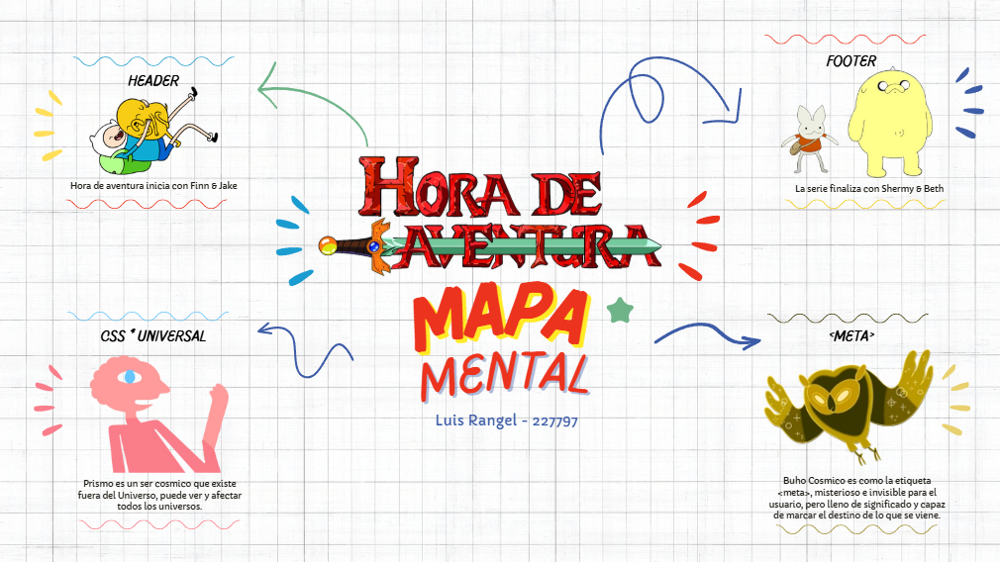
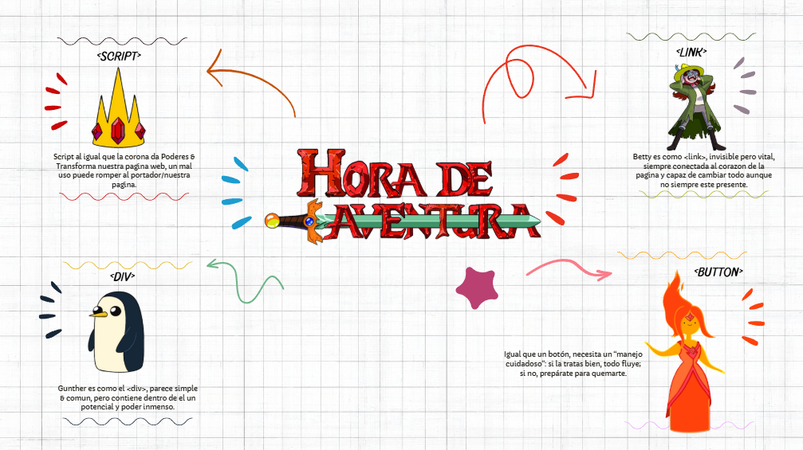
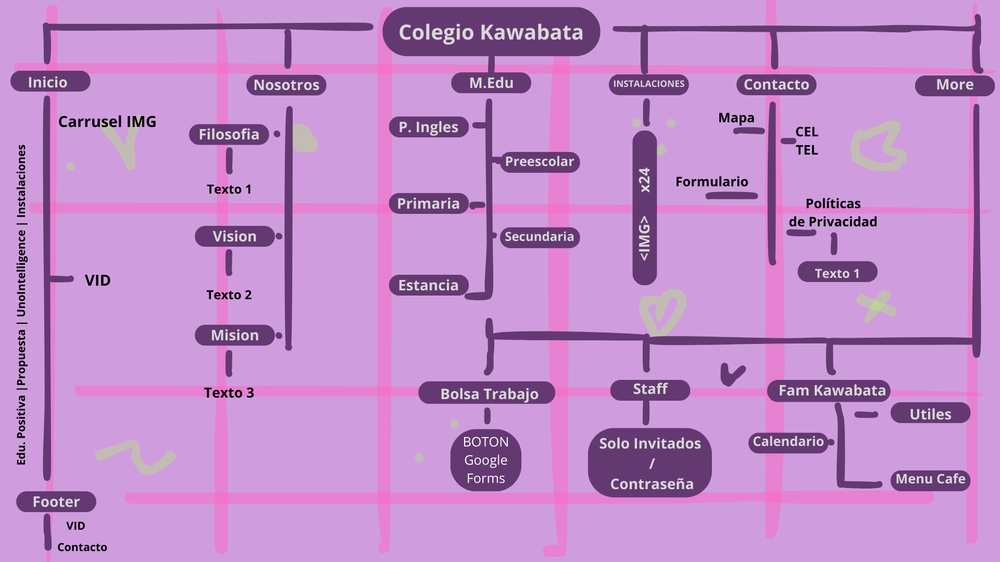

Por Luis Rangel | Grupo A | Diseño Web HTML5 & CSS3 Adaptativo | Septiembre 10 de 2025
Tema 1: DOM
1. ¿Qué es el DOM?
Ejemplo (plano de la casa en Los Sims):
Cuando entras al modo “Construir” en Los Sims, puedes ver todo lo que tiene tu casa: paredes, muebles, ventanas, sims, plantas.
Ese inventario y la forma en que todo está colocado es como el DOM: un mapa de todos los objetos y cómo están organizados.
Si quieres cambiar algo (mover un sofá o poner una ventana), usas ese plano.
2. El DOM en las animaciones
Ejemplo (hacer que un Sim baile):
Cuando seleccionas a un Sim y le das la orden “Bailar”, el personaje empieza a moverse.
El DOM sería como la lista de instrucciones que recibe ese Sim para animarse:
Levantar brazos
Mover pies
Girar
Todo esto ocurre en orden y crea la animación.
3. El DOM en los eventos
Ejemplo (dar clic a un objeto):
En Los Sims, cuando das clic sobre la cama y eliges “Dormir”, el Sim camina hasta la cama y se acuesta.
El evento sería el clic sobre la cama, y el DOM es quien recibe esa señal y ejecuta la acción correspondiente.
4. El DOM en el CSS
Ejemplo (cambiar la ropa de un Sim):
Cuando entras a “Crear un Sim” y le cambias la ropa, color de pelo o accesorios, el Sim sigue siendo el mismo personaje, pero su aspecto cambia.
El CSS es como el vestuario y el DOM es el Sim que se viste con esos cambios.
Captura Figma
Infografia

Viewport
Es una metaetiqueta; indica al navegador y al área visible de la página web que se ajuste al ancho de la pantalla del dispositivo. Es esencial para que las páginas se adapten a diferentes dispositivos.
Adaptacion & Aceleracion de la IA

Unidades Estáticas & Relativas
Unidades de medida:
- Estaticas:
- px (píxeles)
- cm (centímetros)
- mm (milímetros)
- in (pulgadas)
- pt (puntos)
- pc (picas)
- Relativas:
- em
- rem
- % (porcentaje)
- vw (viewport width)
- vh (viewport height)
- vmin (viewport mínimo)
- vmax (viewport máximo)
- ch (caracteres del tipo de letra)
Unidades estáticas: Son fijas y no cambian con el contexto.
Unidades relativas: Dependen de un valor de referencia y cambian según el contexto.
Uso de @Property
Con el uso de @property podemos darle nombre a nuestras propiedades de estilo | Esto nos evita la necesidad de recordar codigos de color, pixeles, medidas, entre otros.
Diagrama de Arquitectura Web
Diagrama de Flujo

Animaciones & Delay
Animaciones en CSS
- Color animation: Cambia colores (texto, fondo, bordes) de forma progresiva.
- Delay (animation-delay): Tiempo de espera antes de iniciar la animación.
- Animation-timing-function: Controla la velocidad: linear, ease, ease-in, ease-out, ease-in-out, cubic-bezier().
- Animation-direction: Dirección: normal, reverse, alternate, alternate-reverse.
- Animation-fill-mode: Estado antes/después: none, forwards, backwards, both.
@Media